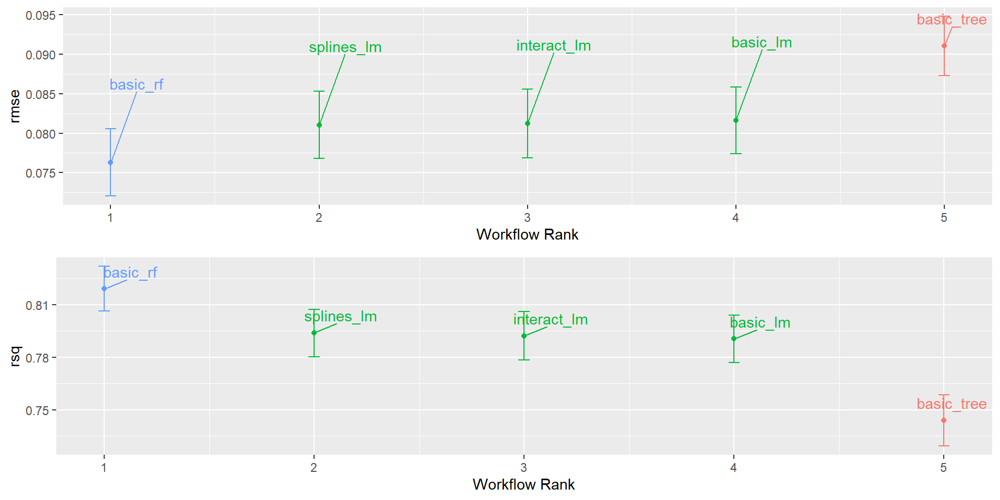

Modelando con Tidymodels
12/29/23
Contenidos
¿Qué es tidymodels?
Componentes claves
Primeros pasos
Construyendo un modelo
Flujos de trabajo
Añadiendo recetas
¿Cómo encontrar el mejor modelo?
Ventajas y desventajas
1. ¿Qué es Tidymodels?
Colección de paquetes para el modelado y aplicación de técnicas de machine learning
Filosofía coherente con el humano
Basado en la sintaxis de tidyverse
Un solo ecosistema

Cargando tidymodels
── Attaching packages ────────────────────────────────────── tidymodels 1.1.1 ──✔ broom 1.0.5 ✔ recipes 1.0.8
✔ dials 1.2.0 ✔ rsample 1.2.0
✔ dplyr 1.1.2 ✔ tibble 3.2.1
✔ ggplot2 3.4.4 ✔ tidyr 1.3.0
✔ infer 1.0.5 ✔ tune 1.1.2
✔ modeldata 1.2.0 ✔ workflows 1.1.3
✔ parsnip 1.1.1 ✔ workflowsets 1.0.1
✔ purrr 1.0.2 ✔ yardstick 1.2.0── Conflicts ───────────────────────────────────────── tidymodels_conflicts() ──
✖ purrr::discard() masks scales::discard()
✖ dplyr::filter() masks stats::filter()
✖ dplyr::lag() masks stats::lag()
✖ recipes::step() masks stats::step()
• Learn how to get started at https://www.tidymodels.org/start/2. Componentes claves
Las librerias más importantes:
parsnip: Especificación de modelosrecipes: Construcción de recetas de preprocesamientoworkflows: Integración de recetas y modelos en un flujo de trabajoworkflowsets: Integración de varios flujos de trabajo
3. Primeros pasos
Construyendo un modelo
Usaremos el set de datos ames que contiene información de 2.930 propiedades sobre sus caracteristicas, ubicación, etc. y a través de métodos de regresión nos interesa modelar los precios de venta.
Podemos aplicar un mismo modelo utilizando diferentes librerias o “motores”
Más información sobre los modelos y sus motores en parsnip models.
Utilizando el motor lm de R:
Call:
stats::lm(formula = Sale_Price ~ Longitude + Latitude, data = data)
Residuals:
Min 1Q Median 3Q Max
-1.02732 -0.09748 -0.01606 0.09782 0.57784
Coefficients:
Estimate Std. Error t value Pr(>|t|)
(Intercept) -308.2368 12.9768 -23.75 <2e-16 ***
Longitude -2.0731 0.1159 -17.89 <2e-16 ***
Latitude 2.8387 0.1617 17.55 <2e-16 ***
---
Signif. codes: 0 '***' 0.001 '**' 0.01 '*' 0.05 '.' 0.1 ' ' 1
Residual standard error: 0.1611 on 2927 degrees of freedom
Multiple R-squared: 0.1724, Adjusted R-squared: 0.1718
F-statistic: 304.9 on 2 and 2927 DF, p-value: < 2.2e-16También podemos ajustar diferentes modelos con el mismo propósito. Por ejemplo, un bosque aleatorio del motor randomForest :
Flujos de trabajo
El principal enfoque de tidymodels está en obtener predicciones adecuadas o precisas dependiendo de los modelos que estemos considerando. Para ello, una metodología comúnmente utilizada es separar los datos de entrenamiento y testeo (tambien es común dejar otros de validación)
Ajustaremos el mismo modelo lm hecho anteriormente pero utilizando un espacio de trabajo
También podemos ir actualizando el modelo modificando los predictores
Los predictores también podrían haberse especificado utilizando un selector más general, como
predictors = c(ends_with("tude"))
También podriamos considerar todos los predictores
predictors = everything()
Varios flujos de trabajo a la vez
Supongamos que queremos centrarnos en las diferentes formas en que se relaciona la ubicación de la casa con su precio. Podemos considerar distintos tipos de fórmulas que nos sean de utilidad
# A workflow set/tibble: 4 × 4
wflow_id info option result
<chr> <list> <list> <list>
1 longitude_lm <tibble [1 × 4]> <opts[0]> <list [0]>
2 latitude_lm <tibble [1 × 4]> <opts[0]> <list [0]>
3 coords_lm <tibble [1 × 4]> <opts[0]> <list [0]>
4 neighborhood_lm <tibble [1 × 4]> <opts[0]> <list [0]># A workflow set/tibble: 4 × 5
wflow_id info option result fit
<chr> <list> <list> <list> <list>
1 longitude_lm <tibble [1 × 4]> <opts[0]> <list [0]> <workflow>
2 latitude_lm <tibble [1 × 4]> <opts[0]> <list [0]> <workflow>
3 coords_lm <tibble [1 × 4]> <opts[0]> <list [0]> <workflow>
4 neighborhood_lm <tibble [1 × 4]> <opts[0]> <list [0]> <workflow>Y así accedemos a los resultados del primer modelo
══ Workflow [trained] ══════════════════════════════════════════════════════════
Preprocessor: Formula
Model: linear_reg()
── Preprocessor ────────────────────────────────────────────────────────────────
Sale_Price ~ Longitude
── Model ───────────────────────────────────────────────────────────────────────
Call:
stats::lm(formula = ..y ~ ., data = data)
Coefficients:
(Intercept) Longitude
-178.045 -1.957 Lo anterior corresponde a una manera más bien manual para obtener los resultados, sin embargo, podemos utilizar métodos de remuestreo como validación cruzada para que el software nos entregue un ranking de los mejores modelos según un criterio específico.
Recetas
El uso de recetas nos permitirá dar instrucciones para procesar los datos previo al modelamiento. Para este ejemplo nos centraremos en otro subconjunto de predictores.
ames_rec <-
recipe(Sale_Price ~ Neighborhood + Gr_Liv_Area + Year_Built + Bldg_Type +
Latitude + Longitude, data = ames_train) %>%
step_log(Gr_Liv_Area, base = 10) %>%
step_other(Neighborhood, threshold = 0.01) %>%
step_dummy(all_nominal_predictors()) %>%
step_interact( ~ Gr_Liv_Area:starts_with("Bldg_Type_") ) %>%
step_ns(Latitude, Longitude, deg_free = 20)
lm_model <- linear_reg() %>% set_engine("lm")
lm_wflow <-
workflow() %>%
add_model(lm_model) %>%
add_recipe(ames_rec)
lm_fit <- fit(lm_wflow, ames_train)4. Buscando el mejor modelo
Esta vez consideraremos diversos modelos y además utilizaremos validación cruzada. De este modo, bajo un cierto criterio el software nos entregará un ranking de la performance de todos los modelos.
Cada función asociada a los modelos recibe argumentos que corresponden a los parámetros de cada modelo, si no estamos seguros de qué valores podrían ser los óptimos podemos ingresar la función tune() para que el software los encuentre automáticamente.
Vamos a crear tres recetas secuenciales para tres modelos lineales diferentes, de este modo podremos saber si estos términos adicionales mejoran los resultados.
basic_rec <-
recipe(Sale_Price ~ Neighborhood + Gr_Liv_Area + Year_Built + Bldg_Type +
Latitude + Longitude, data = ames_train) %>%
step_log(Gr_Liv_Area, base = 10) %>%
step_other(Neighborhood, threshold = 0.01) %>%
step_dummy(all_nominal_predictors())
interaction_rec <-
basic_rec %>%
step_interact( ~ Gr_Liv_Area:starts_with("Bldg_Type_") )
spline_rec <-
interaction_rec %>%
step_ns(Latitude, Longitude, deg_free = 50)Definimos el modelo lineal e Incroporaremos otros 2 métodos basados en árboles de regresión.
lm_spec <-
linear_reg() %>%
set_engine("lm")
tree_spec <-
decision_tree(min_n = tune(), cost_complexity = tune(),
tree_depth = tune()) %>%
set_engine("rpart") %>%
set_mode("regression")
rf_spec <-
rand_forest(mtry = tune(), min_n = 20, trees = 200) %>%
set_engine("randomForest") %>%
set_mode("regression")Luego utilizamos la función workflow_set() para juntar las recetas y las especificaciones de cada modelo.
lm_workflow <-
workflow_set(preproc = list(basic = basic_rec,
interact = interaction_rec,
splines = spline_rec
),
models = list(lm = lm_spec),
cross = F
)
tree_workflow <-
workflow_set(preproc = list(basic = basic_rec),
models = list(tree = tree_spec,
rf = rf_spec)
)
all_workflows <-
bind_rows(lm_workflow, tree_workflow)Finalmente, aplicamos la función workflow_map() que nos permite ajustar cada uno de los modelos automáticamente.
race_results <-
all_workflows %>%
workflow_map(fn = "tune_race_anova",
verbose = T,
seed = 266,
resamples = ames_folds,
grid = 20,
control = race_ctrl,
metrics = metric_set(rmse, rsq) )i No tuning parameters. `fit_resamples()` will be attemptedi 1 of 5 resampling: basic_lm✔ 1 of 5 resampling: basic_lm (2.1s)i No tuning parameters. `fit_resamples()` will be attemptedi 2 of 5 resampling: interact_lm✔ 2 of 5 resampling: interact_lm (4s)i No tuning parameters. `fit_resamples()` will be attemptedi 3 of 5 resampling: splines_lm✔ 3 of 5 resampling: splines_lm (6.6s)i 4 of 5 tuning: basic_tree✔ 4 of 5 tuning: basic_tree (59.5s)i 5 of 5 tuning: basic_rf✔ 5 of 5 tuning: basic_rf (2m 42s)El argumento fn indica el método de búsqueda de los parámetros, el cual puede o no estar enfocado en encontrar aquellos que sean óptimos. En particular tune_race_anova va descartando a través de modelos ANOVA aquellos valores que sean poco probables de ser los óptimos. Los otros métodos diponibles se detallan aqui.
El argumento control nos ayudará a añadir más control sobre optimización de tiempo y almacenamiento de objetos. En particular podemos utilizar la función control_race de la librería finetune.
Y estos fueron los resultados
5. Ventajas y Desventajas
Ventajas
Buena integración con los paquetes de tidyverse
Consistencia y estandarización
Claridad del código
Tutoriales y documentación extensa
Flexibilidad y extensibilidad
Desventajas
Perspectiva diferente al uso estándar de R
Instalación de múltiples paquetes
Menos funciones espcializadas en comparación con otros paquetes
Referencias
- Silge, M. K. A. J. (s. f.). Tidy modeling with R. https://www.tmwr.org/